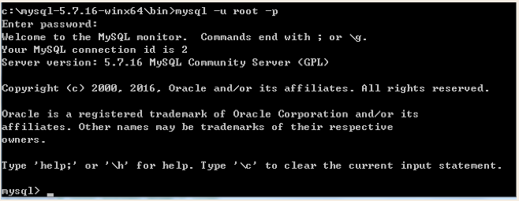
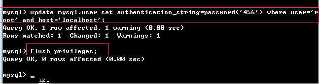

一、基础部分
1.数据库是什么
之前所学，数据要永久保存，比如用户注册的用户信息，都是保存于文件中，而文件只能存在于某一台机器上。
如果我们不考虑从文件中读取数据的效率问题，并且假设我们的程序所有的组件都运行在一台机器上，那么用文件存取数据，并没有问题
但需要考虑的问题是：程序的执行效率依赖于承载它的硬件，而一台机器机器的性能总归是有限的，受限于目前的硬件水平，垂直扩展是有极限的。于是我们只能通过水平扩展来增强我们系统的整体性能，这就需要我们将程序的各个组件分布于多台机器去执行。
需要注意的是，虽然我们将程序的各个组件分布到各台机器，但各组件仍然是一个整体，言外之意，所有组件的数据还是要共享的。但每台机器上的组件都只能操作本机的文件，这就导致了数据必然不一致。
于是我们想到了将数据与应用程序分离：把文件存放于一台机器，然后将多台机器通过网络去访问这台机器上的文件，即共享这台机器上的文件,共享则意味着竞争，会发生数据不安全，需要加锁处理。。。。
为了远程访问并处理这台共享机器上的文件，我们必须为我们的程序额外写一段代码，完成如下功能：
#1.远程连接
#2.打开文件
#3.读写（加锁）
#4.关闭文件我们写任何程序都需要有这段代码，于是我们提取这段代码，写成一个专门的处理软件，这就是mysql等数据库管理软件的由来，但mysql解决的不仅仅是数据共享的问题，还有查询效率，安全性等一系列问题，总之，把程序员从数据管理中解脱出来，专注于自己的程序逻辑的编写。
2.数据库概述
♥什么是数据？（Data）
数据：描述事务的符号记录，描述事物的符号既可以是数字，也可以是文字、图片，图像、声音、语言等，数据由多种表现形式，它们都可以经过数字化后存入计算机
在计算机中描述一个事物，就需要抽取这一事物的典型特征，组成一条记录，就相当于文件里的一行内容，如：
1 haiyan female 20 甘肃 计算机系 单纯的一条记录并没有任何意义，如果我们按逗号作为分隔，依次定义各个字段的意思
id name sex age adderess major #字段
1 haiyan female 20 甘肃 计算机系 #记录如果这样表示的话就了解了一个人的信息了，让人一看就清楚了
♥什么是数据库？（DataBase，简称DB）
数据库，顾名思义就是存放数据的仓库，只不过这个仓库是在计算机存储设备上。
数据库中的数据按一定的数据模型组织、描述和储存，具有较小的冗余度、较高的数据独立性和易扩展性，并可为各种 用户共享
♥什么是数据库管理系统（DataBase Management System 简称DBMS）
在了解了Data与DB的概念后，如何科学地组织和存储数据，如何高效获取和维护数据成了关键
这就用到了一个系统软件---数据库管理系统
如MySQL、Oracle、SQLite、Access、MS SQL Server
mysql主要用于大型门户，例如搜狗、新浪等，它主要的优势就是开放源代码，因为开放源代码这个数据库是免费的，他现在是甲骨文公司的产品。
oracle主要用于银行、铁路、飞机场等。该数据库功能强大，软件费用高。也是甲骨文公司的产品。
sql server是微软公司的产品，主要应用于大中型企业，如联想、方正等。
数据库说白了就是文件夹
数据库管理系统就是一个软件
数据库服务器：就是对外专门提供数据的一个机器
♥数据库服务器，数据库管理系统，表与记录的关系（重点理解）
表：student,scholl,class_list（即文件）
数据库：lzsh_info（即文件夹）
数据库管理系统：如mysql（是一个软件）
数据库服务器：一台计算机（对内存要求比较高）
总结：
数据库服务器---运行--->数据库管理软件
数据库管理软件--->管理--->数据库
数据库---组织--->表，即文件夹---组织--->文件
表---存放--->多条记录，即文件---存放--->多行内容
♥数据库管理技术的发展历程（了解）
1.人工管理阶段
2.文件系统阶段
3.数据系统阶段
3.mysql介绍
MySQL是一个关系型数据库管理系统,MySQL 最流行的关系型数据库管理系统，在 WEB 应用方面MySQL是最好的 RDBMS (Relational Database Management System，关系数据库管理系统) 应用软件之一。
mysql是什么？
mysql就是一个socekt服务端
客户端软件
mysql自带
python模块
其他类型的数据库？
sqllite，db2，oracle，access，sql server，MySQL
分两大类：
关系型：上面这一坨，注意：sql语句通用
非关系型：mongodb，redis，memcache
4.下载安装
Linux版本
#二进制rpm包安装
yum -y install mysql-server mysql1.解压tar包
cd /software
tar -xzvf mysql-5.6.21-linux-glibc2.5-x86_64.tar.gz
mv mysql-5.6.21-linux-glibc2.5-x86_64 mysql-5.6.21
2.添加用户与组
groupadd mysql
useradd -r -g mysql mysql
chown -R mysql:mysql mysql-5.6.21
3.安装数据库
su mysql
cd mysql-5.6.21/scripts
./mysql_install_db --user=mysql --basedir=/software/mysql-5.6.21 --datadir=/software/mysql-5.6.21/data
4.配置文件
cd /software/mysql-5.6.21/support-files
cp my-default.cnf /etc/my.cnf
cp mysql.server /etc/init.d/mysql
vim /etc/init.d/mysql #若mysql的安装目录是/usr/local/mysql,则可省略此步
修改文件中的两个变更值
basedir=/software/mysql-5.6.21
datadir=/software/mysql-5.6.21/data
5.配置环境变量
vim /etc/profile
export MYSQL_HOME="/software/mysql-5.6.21"
export PATH="$PATH:$MYSQL_HOME/bin"
source /etc/profile
6.添加自启动服务
chkconfig --add mysql
chkconfig mysql on
7.启动mysql
service mysql start
8.登录mysql及改密码与配置远程访问
mysqladmin -u root password 'your_password' #修改root用户密码
mysql -u root -p #登录mysql,需要输入密码
mysql>GRANT ALL PRIVILEGES ON *.* TO 'root'@'%' IDENTIFIED BY 'your_password' WITH GRANT OPTION; #允许root用户远程访问
mysql>FLUSH PRIVILEGES; #刷新权限1. 解压
tar zxvf mariadb-5.5.31-linux-x86_64.tar.gzmv mariadb-5.5.31-linux-x86_6/usr/local/mysql //必需这样，很多脚本或可执行程序都会直接访问这个目录
2. 权限
groupadd mysql //增加 mysql 属组
useradd -g mysql mysql //增加 mysql 用户 并归于mysql 属组
chown mysql:mysql -Rf /usr/local/mysql // 设置 mysql 目录的用户及用户组归属。
chmod +x -Rf /usr/local/mysql //赐予可执行权限
3. 拷贝配置文件
cp /usr/local/mysql/support-files/my-medium.cnf /etc/my.cnf //复制默认mysql配置 文件到/etc目录
4. 初始化
/usr/local/mysql/scripts/mysql_install_db --user=mysql //初始化数据库
cp /usr/local/mysql/support-files/mysql.server /etc/init.d/mysql //复制mysql服务程序 到系统目录
chkconfig mysql on //添加mysql 至系统服务并设置为开机启动
service mysql start //启动mysql
5. 环境变量配置
vim /etc/profile //编辑profile,将mysql的可执行路径加入系统PATH
export PATH=/usr/local/mysql/bin:$PATH
source /etc/profile //使PATH生效。
6. 账号密码
mysqladmin -u root password 'yourpassword' //设定root账号及密码
mysql -u root -p //使用root用户登录mysql
use mysql //切换至mysql数据库。
select user,host,password from user; //查看系统权限
drop user ''@'localhost'; //删除不安全的账户
drop user root@'::1';
drop user root@127.0.0.1;
select user,host,password from user; //再次查看系统权限，确保不安全的账户均被删除。
flush privileges; //刷新权限
7. 一些必要的初始配置
1）修改字符集为UTF8
vi /etc/my.cnf
在[client]下面添加 default-character-set = utf8
在[mysqld]下面添加 character_set_server = utf8
2）增加错误日志
vi /etc/my.cnf
在[mysqld]下面添加：
log-error = /usr/local/mysql/log/error.log
general-log-file = /usr/local/mysql/log/mysql.log
3) 设置为不区分大小写，linux下默认会区分大小写。
vi /etc/my.cnf
在[mysqld]下面添加：
lower_case_table_name=1
修改完重启：#service mysql restartWindow版本
1.下载路径：https://www.mysql.com
1.首先下载下来安装包，然后把下载下来的压缩包解压到你要存放的路径
2.然后设置环境变量。例如我的存放在E盘了
设置环境变量：path--E:\mysql-5.7.19-winx64\bin;
3.mysqld --initialize-insecure 初始化 (一初始化就产生了一个data的包)
4.mysqld 启动mysql
5.tasklist | findstr mysql #查看mysql是否启动
6.mysql -uroot -p 无密码登录
7.mysqladmin -uroot password 123 设置密码登录
8.quit 退出
9.windows 系统下干掉任务 tskill mysqld

到此为止，MySQL服务端已经安装成功并且客户端已经可以连接上，以后再操作MySQL时
注意：.当我们每次用mysql启动的时候，闲的麻烦，那么我们把它做成一个系统服务
就用mysqld --install
当在搜索里面输入services.msc就可以看到一个MYSQL了
注册成服务之后，以后再启动和关闭MySQL服务时，仅需执行如下命令：
# 启动MySQL服务
net start mysql
# 关闭MySQL服务
net stop mysql忘记密码了怎么办？
破解密码的两种方式
破解密码一
1.干死mysql（注意：以什么方式启动的就要以什么方式吧它干掉）
2.在cmd中启动：mysqld --skip-grant-tables （跳过所有的授权表）
3.在cmd中登录：mysql
4.输入两条命令：
update mysql.user set authentication_string = password('123') where user = 'root' and host = 'localhost'
flush privileges 重新刷新权限

5.tskill mysqld 干掉任务
6.正常启动mysql
7.mysql -uroot -p123
破解密码二 （仅限于刚刚安装在数据库的时候，如果对你有用的一堆数据已经存在了，
就不要用这种方法，就得用第一种）
1.在mysql的解压目录下新建一个my.ini配置文件
那么在my.ini配置文件里写上
在ini配置文件中注释有两种#或者;
[mysql]
skip-grant-tables (开头的--就不用要了)如果启动了就先关了，然后重新启动一下，登录后，my.ini就生效了
basedir = E:\mysql-5.7.19-winx64
datadir = D:\6_data #如果data指定要保存数据的目录，一定要记得初始化 mysqld --initialize-insecure
#完了吧原先的那个数据data干掉。
4. 在windows下，为mysql服务指定配置文件
#在mysql的解压目录下，新建my.ini,然后配置
#1. 在执行mysqld命令时，下列配置会生效，即mysql服务启动时生效
[mysqld]
;skip-grant-tables
port=3306
character_set_server=utf8
#解压的目录
basedir=E:\mysql-5.7.19-winx64
#data目录
datadir=E:\my_data #在mysqld --initialize时，就会将初始数据存入此处指定的目录，在初始化之后，启动mysql时，就会去这个目录里找数据
#2. 针对客户端命令的全局配置，当mysql客户端命令执行时，下列配置生效
[client]
port=3306
default-character-set=utf8
user=root
password=123456
#3. 只针对mysql这个客户端的配置，2中的是全局配置，而此处的则是只针对mysql这个命令的局部配置
[mysql]
;port=3306
;default-character-set=utf8
user=hiayan
password=123456